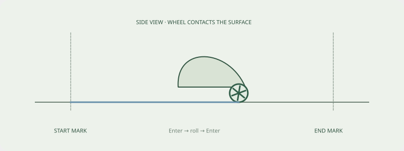

Your mouse. A new measure.
No ruler?
Slide your mouse.
Measure a physical object with an optical mouse. MouseRuler turns raw mouse movement into estimated distance in mm, cm, metres, and inches.
Free · Open source · Windows 11 x64 · Works offline
Extract the ZIP and open MouseRuler.exe. No Python needed. Unsigned executable.
New in 1.4
Another way to measure: roll the wheel.
Choose Wheel in the app, roll once to select your mouse, then start, roll the exposed scroll wheel along your object, and press Enter to finish. The app shows rolled-path estimates in all four units. No mouse DPI or ruler calibration is needed for this method.

The animated guide explains contact and common mistakes. Device-name detection, source-linked model hints, and a one-turn counter make setup easier. Unknown wheel dimensions remain clearly labelled assumptions, not verified physical measurements.
Four steps. One measurement.
How to measure without a ruler
Set your DPI
Enter your mouse’s current hardware DPI. Confirm a detected value if available.
Double-click to start
Align the scroll wheel or a fixed body mark with the starting edge.
Slide to the end
Keep the sensor touching the surface. Slide without rotating or lifting.
Double-click to finish
Read direct distance and travelled path in all four units below the graph.
Enter starts or finishes · Escape cancels · R resets. The cursor hides and stays inside the graph during recording.
Read the measurement guide →A crooked path.
A straight answer.
MouseRuler reads Windows Raw Input rather than the pointer’s screen position. It separates the distance between your endpoints from the path you actually travelled, while you keep the mouse’s heading fixed.
Useful estimates.
Honest limits.
DPI sets the initial distance scale. Optional ruler calibration refines it. Physical accuracy has not been independently validated. Rotation, lift-off, a changed DPI, or a surface that the sensor cannot track can invalidate the result.
Questions, answered.
Can I use a mouse as a ruler?
Yes, for an estimated physical distance on a flat, trackable surface. MouseRuler uses an optical mouse’s movement counts and its DPI or a saved ruler calibration. Keep the mouse facing the same direction throughout.
Do I need a ruler for calibration?
No ruler is needed for a DPI-based estimate if you know your current mouse DPI. Optional calibration requires a known reference distance and can refine the scale.
Does it measure pixels on my screen?
MouseRuler measures the physical displacement of your mouse on a surface. An on-screen ruler measures display distances and serves a different purpose.
Can every mouse detect its own DPI?
No. The app attempts to read compatible HID resolution metadata, but many mice require manual entry. A reported value must be checked against the DPI stage currently selected on the mouse.
Is MouseRuler free and private?
Yes. It is MIT-licensed, runs locally, and has no telemetry. The Windows executable is unsigned. Review the source and release checksums on GitHub.
Put your mouse to work.
For quick surface measurements when a ruler is out of reach. Use a suitable physical measuring instrument when accuracy is critical.